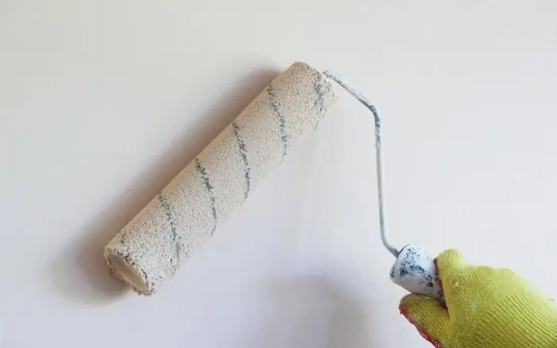

Schilderen, sauzen en behangen
Muren, kozijnen, meubels en deurposten, binnenshuis en buitenshuis. Oud behang eraf, de muur schoon, nieuw behang erop.
- Schilderen en lakken
- Wanden sauzen met roller of verfspuit
- Behang verwijderen en opnieuw behangen